Balance
Balance
Дата обновления: 26.01.2025
Все меняется!
Всем Привет! Это наш ГАФ баланс. Все внесенные изменения могут быть изменены повторно.
Дисклеймер: Внесенные здесь изменения могут быть нарушены или иметь непредвиденные побочные эффекты, если вы с чем-то столкнетесь, пожалуйста, сообщите об этом в отдел баланса на
сайте.
Игровые Баги репортить сюда
Канал на сервере GAF Discord
Все изменения, которые в настоящее время внесены в GAF, позволяют нам оценить новый баланс в реальных играх.
--SupremeKiska и Isakentyi Баланс Команда
О балансе
Прелюдия
Баланс патч 1.1" T2 Land AWAKENING AND SEA MADNESS" :
Первые изменения были не болезненными и влились в игру плавно, кроме вагнеров, на них жалуются. На этот раз мы изменили Т1, Т2 Навал ( море ) и Т2 Ленд. В предыдущем балансе от ФАФ
фрегаты Кибран были перебафаны, ОФЗ опущены на дно вместе с Серафимами и Эон. Дестроер Кибран, снова, Перебафан вместе с Серафим. Мы внесли изменения, и будем смотреть вместе с вами,
играбельно ли теперь играть за другие фракции на флоту. Т2 Ленд юниты изменены не все, мы апнули все ховеры всех фракций, апнули заметно Гоплитов и Мангустов. Будем так же наблюдать
стали ли они играбельными. Переделали пару основных танков. Если мы будем наблюдать явный перекос - будем править. Идеально все и сразу не получится. :)
Land
Т2 Ленд
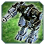
Мангуст
Мангуст - юнит против спама. Но реализован криво.
-
Изменения
- Скорость снарядов пулемета:
30 38
- Количество снарядов пулемета:
15 20
- Количество снарядов гранатомета:
4 5
- Урон гранат:
50 55
- Сплеш гранат:
2 3
Гранатомет теперь стреляет кучнее и попадает по спаму за счет сплеша. Пулемет теперь стреляет точнее,а не куда попало.
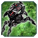
Гоплит
Гоплит похож на мангуста. Скорость поворота башни не позволяло ему нормально мансить изза чего он был бесполезным.
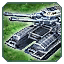 Оплот
Не смотря на название "Оплот" , юнит, весьма сомнительный, да он дешевый, но в целом весьма посредственный. На данный момент увеличен урон.
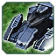
Обсидиан
Медленный жирный танк. Он хорош, но ему не хватало сплеша и башня слишком медленная. В нашем представлении это юнит который едет и ломает кабины.
-
Изменения
- Сплеш:
0 2
- Скорость поворота башни:
75 80
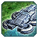
Прибой
Ховеры мы видим быстрыми "кусачими" юнитами. Апнули скорость и атаку. Прибой медленнее остальных, но скорострельнее и жирнее.
-
Изменения
- Скорость передвижения:
3.8 4.3
- Урон:
13.5 15
 Вагнер
Вагнер
На вагнера жалуются. Делаем урон по меньше.
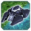
Пламя
Эонский ховер самый хилый, но дальность стрельбы выше и хороший ДПС, скорость среди ховеров средняя.
-
Изменения
- Скорость передвижения:
4.3 4.8
- Урон:
15 20
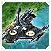
Яшавох
Самый Альфовый Ховер, самый быстрый, средняя дистанция стрельбы. Изменили урон. Отняли немного и добавили скорострельность.
-
Изменения
- Урон:
200 150
- Сплеш:
0 2
- Перезарядка:
4.5 2.5
- ССкорость передвижения:
4.5 5
Navy
Т1 Навал
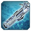
Тигровая Акула
Т1 подлодка ОФЗ стреляла не верно, теперь она стреляет залпом 4 ракеты и уходит на долгую перезарядку, Дпс понизили и порезали урон,потому что стала имбой изза урона.
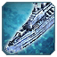
Гроза
Апнули ОФЗ фрегат. Он был "толще" остальных Фрегатов, но ему это вообще не помогало из-за низкого ДПСа и скорости поворота башни.
-
Скорострельность
- DPS:
50 57
- Скорость поворота башни:
90 110
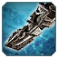
Трезубец
Добавили стоимость по масе и увеличили урон.
-
Стоимость
- Увеличено количество массы при заказе:
250 270
- Урон:
45 50
- DPS:
64 71
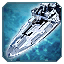
Маяк
Добавили дальность стрельбы. Раньше фрегат был "дальнобойным", сейчас он действительно таким является. И поменяли скорость перезарядки Анти-торпедной системы. (сделали как у сера
подлодок) Мы считаем это даст жизнь Эон на т1 стадии.
-
Дальность стрельбы
- Радиус:
33 37
- Скорость поворота башни:
90 100
- Перезарядка Анти-торпедной системы:
6.7 5
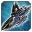
Хау-есель
На данный момент подняли урон, если фрегат будет сильно проигрывать всем остальным - апнем.
Т2 Навал
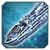
Доблесть
Этот эсминец был "толстым" и поэтому его понерфили так ,что им играть было невозможно. Мы изменили ему тип стрельбы торпедами, апнули точность и скорость снаряда и сделали реально
толстым.
-
Здоровье
- ХП:
8000 9000
- Макс ХП:
8000 9000
- Разброс снарядов:
0.35 0.25
- Допустимое отклонение:
2 4
- Скорость снаряда:
30 35
- Залп торпед:
2 6
Не пугайтесь торпед, эсминец выплевывает торпеды залпом и уходит на долгое кд.
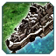
Иерусалим
Этот эсминец был перебафан, он стреляет дальше всех и быстро. Пока до него доплывешь все хп потеряно. Но с измененными эсминцами остальных рас он показался слабее, поэтому еще немного
апа. Всегда можно занерфить.
-
Урон
- Урон:
115 120
- Допустимое отклонение:
2 3
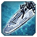
Исход
Много лет назад Исход был под стать своему названию. У него были глубинные бомбы и он был дальнобойным. С расстояния он не давал жить,а в близи уничтожал все. В нынешнем (ФАФ) балансе
он тоже под стать своему имени,но в нигативном плане. Мы вернули старые значения и теперь т2 флот Эон играбельный.
-
Возвращено
- Дальность стрельбы:
70 80
- Глубинные бомбы Урон:
0 350
- Допустимое отклонение:
2 3
- Скорость снаряда:
30 32
Вылетает одна бомба,вместо двух
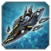
Уашавох
Ненавистный всеми лазерный эсминец наконец-то понерфлен и немного апнут.
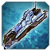
Купер
Апнута скорость катера, скорость была как у фрегатов, что позволяло им догонять его. Скорость Т2 подлодок выше чем у фрегатов.Катер это катер и он должен быть быстрым.
-
Ап
- Скорость передвижения:
6.0 7.0